内存泄漏排查
2024-06-15 08:07:58 · YinHao
使用 Chrome devTools 查看内存情况
打开 Chrome 的无痕模式，以屏蔽 Chrome 插件对我们之后测试内存占用情况的影响。然后打开开发者工具，找到 Performance 栏，可以看到一些功能按钮，如开始录制按钮、刷新页面按钮、清空记录按钮、记录并可视化 js 内存、节点、事件监听器按钮、触发垃圾回收机制按钮等。
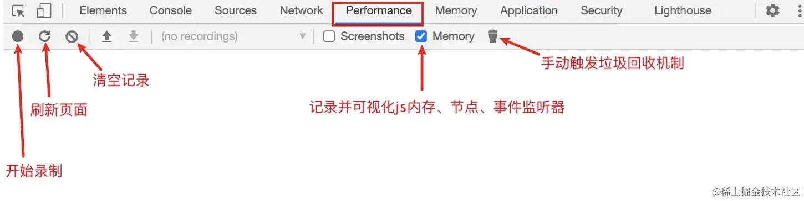
请简单录制一下百度页面，观察我们能够获取到什么信息，如下动图所示：
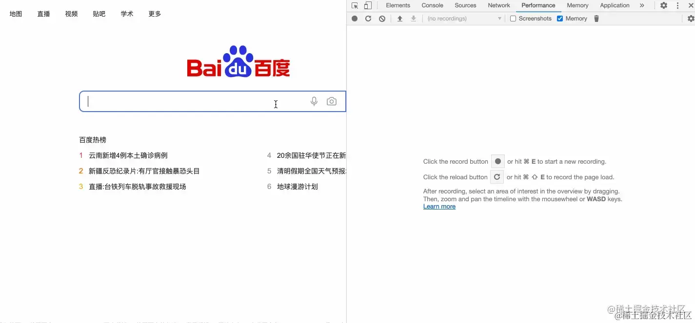
从图表中我们可以清楚地观察到，在页面加载过程中JS Heap（js 堆内存）、documents（文档）、Nodes（DOM 节点）、Listeners（监听器）、GPU memory（GPU内存）的最低值、最高值以及随时间的变化趋势，这是我们关注的重点。
查看开发者工具中的Memory一栏，主要用于记录页面堆内存的具体情况以及 js 堆内存随加载时间线动态的分配情况。
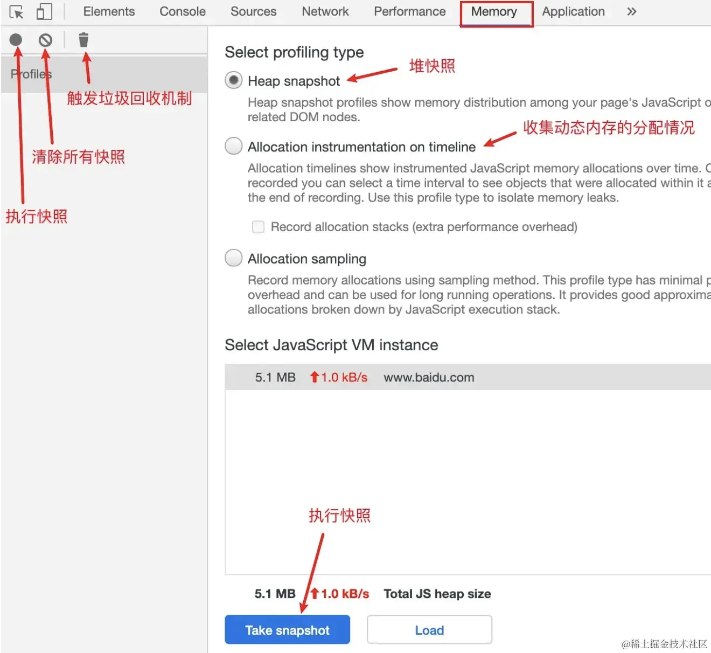
堆快照类似于照相机，可以记录当前页面的堆内存情况。每次进行快照，都会生成一条快照记录。
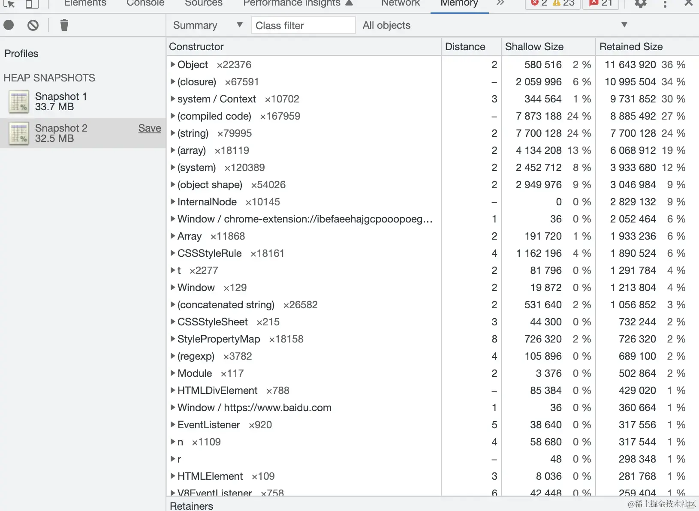
根据上图所示，我们首先进行了一次快照，记录了当时堆内存空间占用为 33.7MB。随后，我们点击了页面中的一些按钮，再次执行了一次快照，记录了当时堆内存空间占用为 32.5MB。此外，通过点击相应的快照记录，我们可以查看当时所有内存中的变量情况，包括结构和占总内存的百分比等信息。
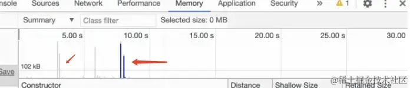
在记录数据后，我们可以观察到图表右上角有起伏的蓝色和灰色柱状图，其中蓝色代表当前时间线下所占用的内存；灰色表示之前占用的内存空间已被清除释放。
在发现存在内存泄漏的情况时，我们可以使用Memory来更清晰地确认问题并定位问题。
首先，可以使用Allocation instrumentation on timeline来确认问题，如下图所示：.
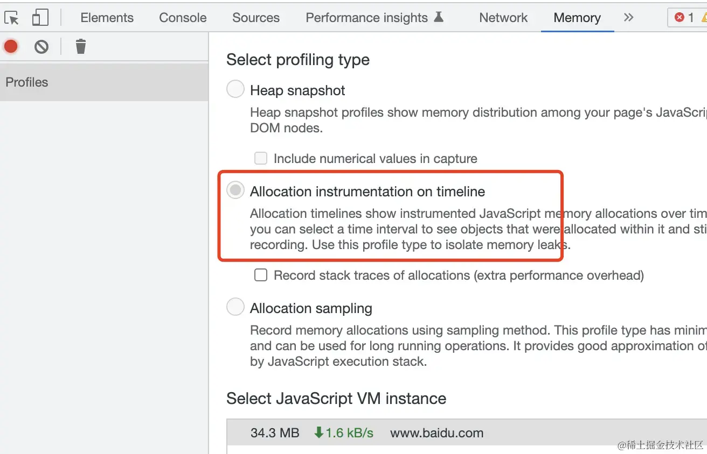
内存泄漏的场景
- 闭包使用不当引起内存泄漏
- 全局变量
- 分离的
DOM节点 - 控制台的打印
- 遗忘的定时器
1. 闭包使用不当引起内存泄漏
使用Performance和Memory来查看一下闭包导致的内存泄漏问题
<button onclick="myClick()">执行fn1函数</button>
<script>
function fn1() {
let a = new Array(10000); // 这里设置了一个很大的数组对象
let b = 3;
function fn2() {
let c = [1, 2, 3];
}
fn2();
return a;
}
let res = [];
function myClick() {
res.push(fn1());
}
</script>
在fn1函数执行上下文退出后，本应将该上下文中的变量a视为垃圾数据并进行回收。然而，由于fn1函数最终将变量a返回并赋值给全局变量res，这导致对变量a的引用产生，使得变量a被标记为活动变量并一直占用相应的内存。如果假设后续不再使用变量res，那么这就是一个闭包使用不当的例子。
为了能够在performance的曲线图中观察效果，我们设置了一个按钮，每次点击执行时，将fn1函数的返回值添加到全局数组变量res中。如下图所示：
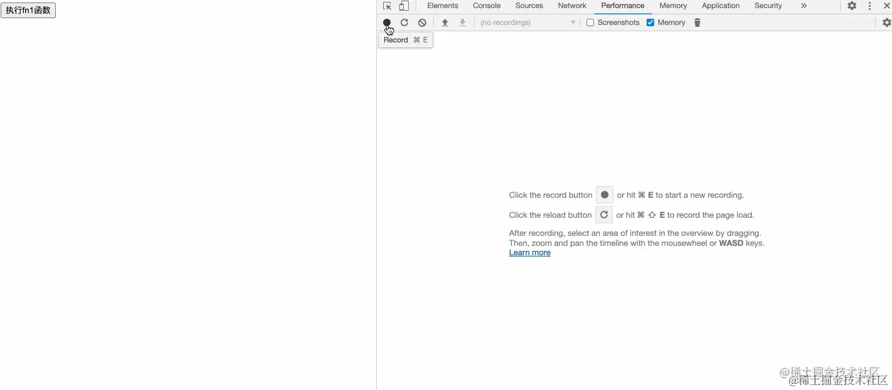
- 在每次录制开始时手动触发一次垃圾回收机制，这是为了确认一个初始的堆内存基准线，便于后面的对比。然后我们点击了几次按钮，即往全局数组变量
res中添加了几个比较大的数组对象。最后再触发一次垃圾回收，发现录制结果的 JS Heap 曲线刚开始成阶梯式上升的，最后的曲线的高度比基准线要高，说明可能是存在内存泄漏的问题。 - 在得知有内存泄漏的情况存在时，我们可以改用
Memory来更明确地确认问题和定位问题。 - 首先可以使用
Allocation instrumentation on timeline来确认问题，如下图所示：.
- 每次点击按钮后，动态内存分配情况图上都会出现一个
蓝色的柱形，而且在我们触发垃圾回收后，蓝色柱形都没有变成灰色柱形，也就是说之前分配的内存没有被清除。 - 因此，我们可以明确地确认存在内存泄漏的问题。接下来，我们需要精确定位问题，可以使用
Heap snapshot来进行定位，如下图所示：
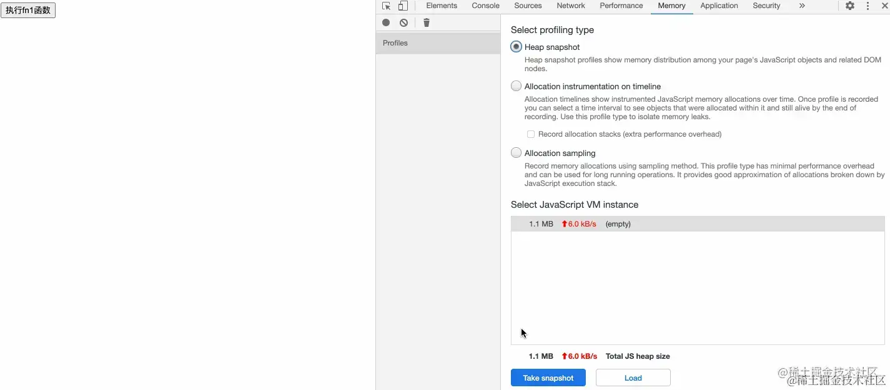
- 首先，我们需要点击快照记录初始的内存情况，然后多次点击按钮后再次点击快照，记录此时的内存情况。我们发现，从原来的
1.1M内存空间变成了1.4M内存空间。接着，我们选中第二条快照记录，可以看到右上角有一个All objects的字段，表示展示当前选中的快照记录所有对象的分配情况。我们想要知道的是第二条快照与第一条快照的区别在哪，因此选择Object allocated between Snapshot1 and Snapshot2，即展示第一条快照和第二条快照存在差异的内存对象分配情况。这时，我们可以看到 Array 的百分比很高，初步可以判断是该变量存在问题。点击查看详情后，就能查看到该变量对应的具体数据了。
这是一个判断闭包是否导致内存泄漏问题并简单定位的方法
2. 全局变量
全局变量通常不会被垃圾回收，但并非所有变量都不能存在于全局范围。有时由于疏忽，会导致某些变量流失到全局，比如未声明变量，却直接对其赋值，这将导致该变量在全局范围创建。如下所示：
function fn1() {
// 此处变量name未被声明
name = new Array(99999999);
}
fn1();
- 此时，当出现这种情况时，会自动在全局范围内创建一个变量
name，并将一个大型数组赋值给name。由于它是全局变量，所以该内存空间将一直保持不释放。 - 要解决这个问题，我们需要自己在平时多加注意，不要在变量声明之前进行赋值。另外，也可以考虑
开启严格模式，这样在不知不觉中犯错时，会收到错误警告。例如，
function fn1() {
"use strict";
name = new Array(99999999);
}
fn1();
3. 分离的DOM节点
如果您手动删除了一个dom节点，本应该释放该节点占用的内存，但由于疏忽导致某处代码仍然引用了该被移除节点，最终导致该节点占用的内存无法被释放，这种情况是很常见的。
<div id="root">
<div class="child">我是子元素</div>
<button>移除</button>
</div>
<script>
let btn = document.querySelector("button");
let child = document.querySelector(".child");
let root = document.querySelector("#root");
btn.addEventListener("click", function () {
root.removeChild(child);
});
</script>
代码的功能是在点击按钮后移除.child节点，尽管节点在点击后确实从dom中移除了，但全局变量child仍然保留对该节点的引用，导致该节点的内存无法释放，建议使用Memory的快照功能进行检测，具体操作如下图所示。
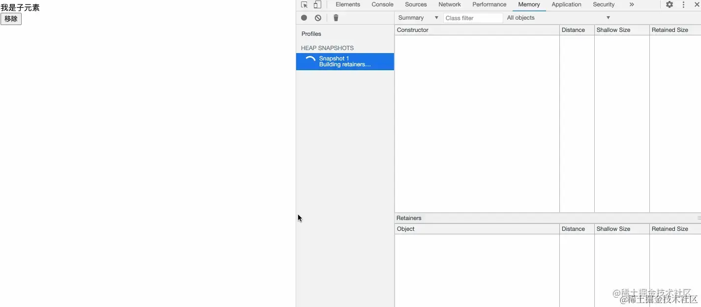
先记录下初始状态的快照，然后在点击移除按钮后，再次点击一次快照。此时，我们无法看出内存大小的任何变化，因为被移除的节点占用的内存非常小，可以忽略不计。但是，我们可以点击第二条快照记录，在筛选框中输入“detached”，这样就会显示所有脱离但尚未被清除的节点对象。
解决办法如下图所示：
<div id="root">
<div class="child">我是子元素</div>
<button>移除</button>
</div>
<script>
let btn = document.querySelector("button");
btn.addEventListener("click", function () {
let child = document.querySelector(".child");
let root = document.querySelector("#root");
root.removeChild(child);
});
</script>
修改非常简单，只需将对.child节点的引用移动到click事件的回调函数中。这样，当移除节点并退出回调函数的执行上下文后，对该节点的引用将自动清除，从而避免了内存泄漏的情况。让我们来验证一下。如下图所示：
结果很明显，这样处理过后就不存在内存泄漏的情况了
4. 控制台的打印
<button>按钮</button>
<script>
document.querySelector("button").addEventListener("click", function () {
let obj = new Array(1000000);
console.log(obj);
});
</script>
我们在按钮的点击回调事件中创建了一个很大的数组对象并打印，用performance来验证一下
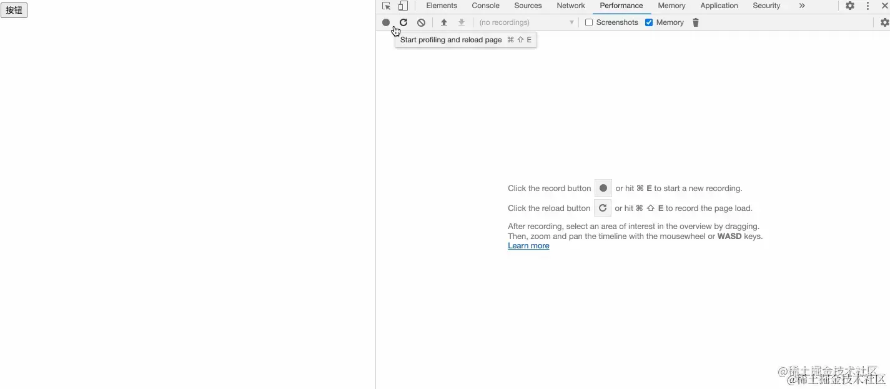
开始录制时，首先进行一次垃圾回收以清除初始内存。然后点击按钮三次，即执行了三次点击事件。最后再次触发一次垃圾回收。观察录制结果发现，JS Heap曲线呈阶梯状上升，并且最终保持的高度比初始基准线高很多。这说明每次执行点击事件时，创建的大型数组对象obj由于被浏览器保存并且无法回收，导致内存占用增加。
接下来注释掉console.log，再来看一下结果：
<button>按钮</button>
<script>
document.querySelector("button").addEventListener("click", function () {
let obj = new Array(1000000);
// console.log(obj);
});
</script>
可以看到没有打印以后，每次创建的obj都立马被销毁了，并且最终触发垃圾回收机制后跟初始的基准线同样高，说明已经不存在内存泄漏的现象了
其实同理 console.log也可以用Memory来进一步验证
未注释 console.log
注释掉了console.log
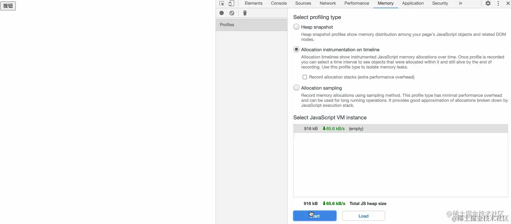
最后简单总结一下：在开发环境下，可以使用控制台打印便于调试，但是在生产环境下，尽可能得不要在控制台打印数据。所以我们经常会在代码中看到类似如下的操作：
// 如果在开发环境下，打印变量obj
if (isDev) {
console.log(obj);
}
这样就避免了生产环境下无用的变量打印占用一定的内存空间，同样的除了console.log之外，console.error、console.info、console.dir等等都不要在生产环境下使用
5. 遗忘的定时器
定时器也是平时很多人会忽略的一个问题，比如定义了定时器后就再也不去考虑清除定时器了，这样其实也会造成一定的内存泄漏。来看一个代码示例：
<button>开启定时器</button>
<script>
function fn1() {
let largeObj = new Array(100000);
setInterval(() => {
let myObj = largeObj;
}, 1000);
}
document.querySelector("button").addEventListener("click", function () {
fn1();
});
</script>
这段代码是在点击按钮后执行fn1函数，fn1函数内创建了一个很大的数组对象largeObj，同时创建了一个setInterval定时器，定时器的回调函数只是简单的引用了一下变量largeObj，我们来看看其整体的内存分配情况吧：
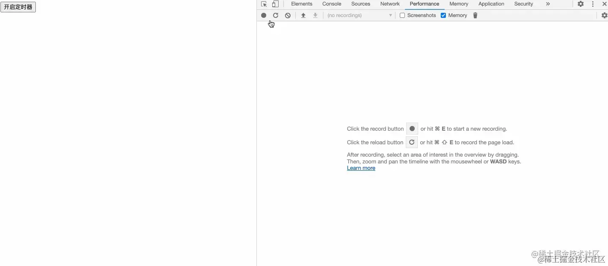
按道理来说点击按钮执行fn1函数后会退出该函数的执行上下文，紧跟着函数体内的局部变量应该被清除，但图中performance的录制结果显示似乎是存在内存泄漏问题的，即最终曲线高度比基准线高度要高，那么再用Memory来确认一次：
- 在我们点击按钮后，从动态内存分配的图上可以看到一个蓝色柱形，表示浏览器为变量
largeObj分配了一段内存。然而，这段内存并没有被释放，这说明存在内存泄漏的问题。其实，问题的原因是setInterval的回调函数内对变量largeObj有一个引用关系，而定时器一直未被清除，所以变量largeObj的内存也自然不会被释放。 - 那么，我们如何解决这个问题呢？假设我们只需要让定时器执行三次，我们可以对代码进行一些修改：
<button>开启定时器</button>
<script>
function fn1() {
let largeObj = new Array(100000);
let index = 0;
let timer = setInterval(() => {
if (index === 3) clearInterval(timer);
let myObj = largeObj;
index++;
}, 1000);
}
document.querySelector("button").addEventListener("click", function () {
fn1();
});
</script>
现在我们再通过performance和memory来看看还不会存在内存泄漏的问题
performance
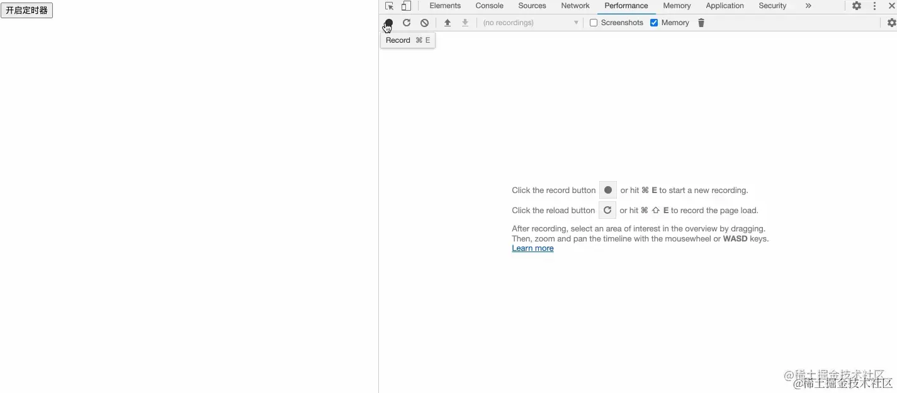
这次的录制结果表明，最终曲线的高度与初始基准线的高度相同，这意味着没有发生内存泄漏。
memory
这里需要澄清一下，图中最初出现的蓝色柱形是因为我在录制后刷新了页面，可以忽略；接着我们点击了按钮，看到又出现了一个蓝色柱形，这时是为fn1函数中的变量largeObj分配了内存，3s后该内存被释放，变成了灰色柱形。因此可以得出结论，这段代码没有内存泄漏问题。
简要总结一下：在使用定时器时，务必在不需要定时器时清除，否则可能出现类似本例的情况。除了setTimeout和setInterval，浏览器还提供了API，如requestAnimationFrame，也可能存在这种问题。